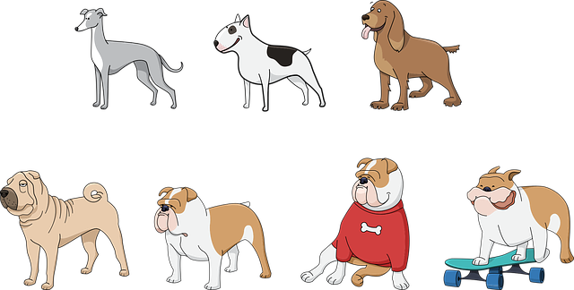
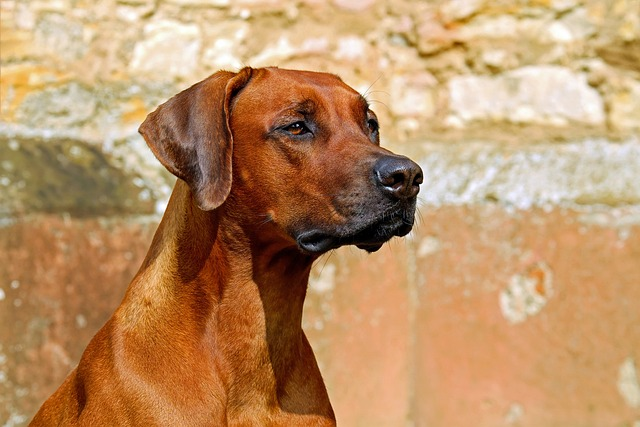

Leader: Mr. Peanut
Mr. Peanut is a graudate of the University of Barkington where he studied theoretical sniffing.
Good Boys and Girls of Australia

Meet Our Team


Deputy Leader: Sarah Jessica Barker
Ms. Barker is an active member of the community and is an expert face licker.
Ms. Barker is an active member of the community and is an expert face licker.

Treasurer: Snuffles
Before entering politics Snuffles was a one of the top bird law experts in the country.
Before entering politics Snuffles was a one of the top bird law experts in the country.

Secretary: Doug
We'll be honest, we're not too sure what Doug does around here but he sure is lovable.
We'll be honest, we're not too sure what Doug does around here but he sure is lovable.
A dog is not considered a good dog because he is a good barker. A man is not considered a good man because he is a good talker.
Bark Obama
Call to action!
blah blah blah